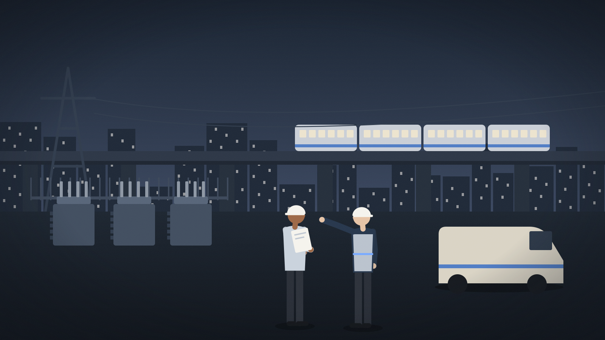

About
We help organizations build what comes next.
AL Ops combines a technology platform with advisory and implementation services. We start with the business change you want to achieve, then bring together the strategy, software, and delivery needed to pursue it, beginning with AI.

One business ambition. Three complementary parts.
Define the change, enable it, put it to work. Each part has a clear role, and you do not need to buy all three.
Advisory
Define the opportunity, business case, future way of working, and measures of success.
Platform
Provide the software capabilities that support the agreed change, starting with the verified AI offering.
Implementation
Configure, integrate, and introduce the solution into your operation, with adoption and handover responsibilities agreed in scope.
How we work
What you can expect from us.
We help you build the next source of growth. We do not promise to redefine everything.
We talk about responding to customers sooner, not about the layers of software behind it.
Start with one meaningful change rather than waiting until the organization is fully ready.
Define the result and measure the change. We do not guarantee transformation.
Meet the team responsible for delivery.
Leadership biographies, the legal entity and contact details will be published here once verified.